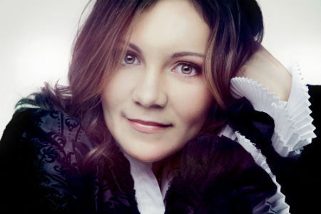

Brandon Ridenour
Friday October 14, 2016 7:30 PM
Brandon Ridenour is a winner of the 2014 CAG Victor Elmaleh
Competition. His wide-ranging activities as a soloist and chamber
musician, paired with his passion for composing and arranging, are evident in
his versatile performances and unique repertoire.
In the 2015-16 season, Brandon makes his Carnegie Hall recital debut at Weill Recital Hall (CAG
Winners series) and other featured recitals include: Northeastern Illinois
University’s Jewel Box Series in Chicago;
Chamber Music Society of Little Rock; The Regina Quick Center for the Arts at
St. Bonaventure University (NY); and St. Vincent College Concert Series, near Pittsburgh.
As a concerto soloist, Brandon
appears in 2015-16 with the South Bend Symphony and Modesto Symphony, and is
also featured with the Chamber Music Society of Lincoln Center for its annual
performances of Bach’s complete Brandenburg Concertos.
At the age of
twenty, Brandon
became the youngest member ever to join the iconic Canadian Brass, a position he held for
seven years. While with the group, he played in distinguished venues around the
world, performed on television, recorded ten albums, and received three Juno
Award nominations.
Brandon has appeared as a
concerto soloist with the National Symphony Orchestra, Los Angeles Philharmonic,
and the Indianapolis, Jacksonville, and Edmonton Symphony
Orchestras. He has played with leading ensembles including the New York
Philharmonic, International Contemporary Ensemble, the Knights, the Royal
Scottish National Orchestra, the Deutsche Kammerphilharmonie Bremen, and the Mahler Chamber Orchestra.
Other solo performances include the KennedyCenter, Walt Disney Hall,
and Carnegie Hall, where he most recently appeared in a performance of Penny Lane alongside Sting
and James Taylor.
Brandon is the winner of the
2006 International Trumpet Guild solo competition and a recipient of the Morton
Gould ASCAP Young Composer Award. He has recorded three solo albums; his latest
release is Fantasies and Fairy Tales which
features his own virtuosic arrangements of classical masterworks for trumpet
and piano.
A graduate of
The Juilliard School and an alumnus of Carnegie Hall’s Ensemble ACJW, Brandon began playing piano
at the age of 5 under the tutelage of his father, Rich
Ridenour, with whom he still performs frequently in recital and with
Pops Orchestras. Brandon
is also a part of chamber groups Decoda, Founders,
and USEFULchamber.
Brandon is also a Wedge
Mouthpiece Artist.
www.BrandonRidenour.org
----------------------------------------------------------------------------------------------------------------------
Sonic Escape
Saturday November 19, 2016 7:30 PM

From fiddle-dancing for thousands in
Tiananmen Square, to a flute concert on skis in the mountains of Vermont, to couch
surfing parties in the Arctic Circle, a cross-country caper in a busted $500
minivan… Adventure abounds when art rules life, and sharing it with the
world is what Sonic Escape’s about!
Shawn
Wyckoff and Maria Millar founded Sonic Escape in 2009. Armed with flute &
violin, their game plan – use hyper-instrumentals to fill hearts with
indescribable joy – has landed them on hundreds of stages across 30+ North
American states, provinces and beyond! “Maria and Shawn push themselves to the brink – singing, dancing,
telling stories, and above all, playing their hearts out with a wonderfully
imaginative… anything goes sense of fun.” --The Washington Post, 2014
The two met at “The Juilliard School”.
A love of blading the streets of New York (and a spring break in Ireland)
forged a romance powered by fun. But playing the flute & violin
together?! No way! Too shrill, hard to tune! Temptation
kicked in, though, and Shawn and Maria gave it a go. Tuning took 2 years;
matching breath & bow took even longer. Composing music that
amplifies the virtuosity, range and emotion of the flute & violin – that’s
when the real fun began. They knew they’d arrived when an audience
exclaimed, “Hurry, lock the doors! Don’t
let them leave”!
Sonic Escape is the recipient of three “Canada Council for the Arts Composition Grants”, a “Puffin Foundation Award” and a “Chamber Music America Residency Grant”.
The group has performed across the US, Canada and Norway in concerts,
outreach shows and residencies for Lincoln
Center (NYC), Irish Arts Center
(NYC), Chautauqua Institution
(Chautauqua, NY), Summer Arts Festival (Huntington,
NY), Hofstra University (Hempstead,
NY), Western Michigan University
(MI), Penn State Erie’s Music at Noon (Erie, PA), Touhill Performing Arts Center (St. Louis, MO), Oxnard Performing Arts and Convention Center
(Oxnard, CA), Homestake Opera House (Lead,
SD), Eckhardt-Gramatté Concert Hall (Calgary,
AB), Elora Festival (Elora, ON) and
the Cherry Blossom Festival
(Philadelphia, PA).
www.SonicEscapeMusic.com
------------------------------------------------------------------------------------------------------------------------------------
Alina Kiryayeva
Saturday, February 4, 2017 7:30 PM

Praised for her
powerful command of the instrument, unique interpretations and clarity of
sound, Alina Kiryayeva captivates the audiences with her profound philosophical
insight and charismatic stage presence.
A native of the Ukraine,
Ms.Kiryayeva performed her first solo recital at age 8 and her solo debut with
an orchestra at the age of 11. The First Prize winner of the Senigallia
International Competition, Italy, Ms. Kiryayeva has also claimed top prizes in
several international piano competitions in the USA, including the Grace Welsh
International Competition, and the California Young Artist International
Competition. She was honored by the Ukrainian President, Leonid Kravchuk, with
the State Award for Achievements in Arts. One of very few classical pianists
that completed both Bachelor and Master degrees at The Juilliard School of
Music on full scholarship, she has also been awarded the Fannie
Gottlieb-Harkavi Scholarship and Susan Rose Piano Scholarship.
Ms. Kiryayeva has toured her native Ukraine as well as Russia, Mexico,
France, Germany, Austria, Italy, Holland, Japan
and United States.
In recent seasons she has performed with the KharkovState Philharmonic and State Opera
Theatre Orchestras, The Imperial Valley Symphony orchestra and New York Symphonic
Ensemble Orchestra.
In 2013 Ms. Kiryayeva released a solo piano album "Sonatas", which
was featured on 150th broadcast of "Women in Music" on CKWR Radio in Ontario, Canada.
A n avid chamber musician, she has collaborated with an array of esteemed artists,
including renowned clarinetist Charles Neidich, and internationally
acclaimed counter-tenor Terry Barber. In an award-winning collaboration
with the distinguished clarinetist Maksim Shtrykov Alina appeared in New York
debut recital in Weill Hall at Carnegie Hall, in Chamber Music Marathon
at the Morse Recital Hall, New York, the Concerto Takes Manhattan Series at
Yamaha Hall in New York, Young Artist Concert Series in Bergenfield, NJ and the
Concert Series at Jefferson’s Ferry, NY.
Ms.Kiryayeva's upcoming chamber music performances include appearances in
Steinway Series at SmithsonianMuseum and in the Library of Congress in WashingtonDC.
www.AlinaKiryayeva.com
-------------------------------------------------------------------------------------------------------
Derik Nelson & Family
Friday March 24, 2017 7:30 PM

Raised in the Pacific Northwest, Derik
Nelson & Family's signature sound features velvety three-part vocal
harmonies only a family can deliver. Siblings Derik, Riana, and Dalten have been performing together since
childhood. They’ve garnered over 3 million views on YouTube, and toured over 40
locations across the West Coast U.S.A. to raise money for music education.
Derik has appeared regularly as the lead guitarist on television’s “Glee,”
among other shows.
Derik Nelson & Family delivers a concert experience like no other,
featuring pristine sound, a state of the art light show, and an integrated
20-foot video display. Derik’s interactive “clones” are featured throughout the
show on the 5 screen video "wall." The multiple "Derik clones"
paint an expansive wall of sound of limitless sonic possibilities by each
playing many different instruments. This innovative technical marvel uses the
latest in audio/video technology to take audiences on an aural and visual
journey through time, space, an impressive array of landscapes, weather
conditions, and musical "settings."
www.DerikNelson.com/nelsonfamily
-----------------------------------------------------------------------------------------------------------------------------------------